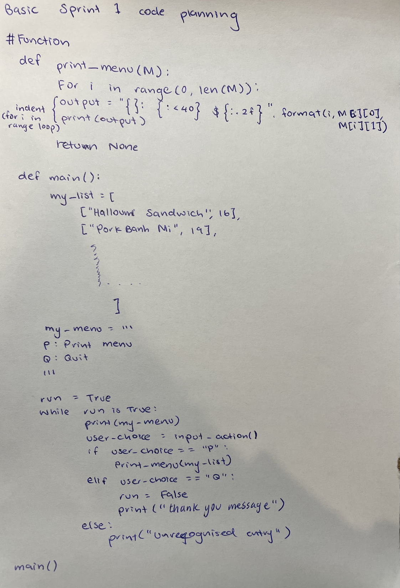

Brief
To make a program for Marsden Gourmet Sandwich Bar to computerise their phone orders. We want this program to enter customer details, able to order sandwich and allow the user to be able to choose from pick-up or delivery. After this, the program should be able to display the delivery details, the items ordered and the total cost.
Project Backlog

Sprint 1
Aim: Create a basic menu that allows user to print the menu and quit
Basic program plan
Sprint 1 Board in Progress
Basic Test of Program
Sprint Reflection
This first sprint has a basic 2 option menu that allows the user to print the sandwich menu and to quit. When the user chooses to print the menu, it prints the sandwich names and their prices. I have made this program to run in a loop, this allows the program to redirect the user to the main menu everytime after they choose to print the sandwich menu until they choose to quit. When the quit option is selected, it prints a message that acknowledges that the quit has worked and they are no longer using the program. I have included formatting in the printing of the menu, this will set up my program nicely for later sprints to be added on easily. I have included basic validation for upper/lower case letters, this means if the user enters a lower case letter it'll be read as an upper case letter. By doing this, I reduce the chances of my code throwing an error, although I have also added an else function so if an unrecognised entry (not A/a or B/b) is entered the program will let the user know that it's not an option. I encountered a few errors when trying to code the function for formatting the sandwich menu, so I moved my_list to the main() function which will also help with future proofing. I had an error when trying to format my_list when I moved my_list to main(), this did not work out as I got an error when trying to print out the list with the formatting.
Sprint 2
Aim: Adding sandwiches to the customer's order and the customer being able to review their order
Basic program plan
Testing: While trying to test the review function, instead of needing to go through the whole ordering process I had already inputted some sandwiches in my_order list so that I could immediately choose the review option to make sure this function was being called and working properly. This aided the testing process by using a simple solution to help the efficiency of trying to find errors and testing the code.

Finished testing:
Sprint 2 Board in Progress

Sprint Reflection
This second sprint has 2 more options in the menu that allows the user to order sandwiches and to review their order. When the user chooses the order option they will be asked how many sandwiches they'd like to order, then they will place their order via inputting the index number that corresponds with that sandwich. After the customer places their order and the options menu prints again, if they choose the review order option then the program will print a list of all the sandwiches that the customer has ordered. After the customer has ordered, since the whole option menu is on a loop, this means the user can then choose to review their order. The review order function prints out the number of that sandwich the customer has order, what sandwich they ordered and the price of the sandwich. It also prints the grand total by adding all the prices of how many and what sandwiches the customer ordered. I have added get_string and get_integer functions as well to prevent errors in the future and to keep the program running smoothly.
Github Push

Sprint 3
Aim: Adding a edit order option to menu (customer is able to change how many sandwiches they ordered and delete any from their order) and also have an option on the menu to have their order delivered (which adds an extra $3 to their total cost) or pick it up which is free of charge.
Basic program plan
Sprint 3 Board in Progress

Basic Test of Program
Testing the pick up or delivery function. It works fine, but when I tested it for if I wanted to change how I receive my order it would throw an error. So as a result a confirmation of wanted to change their option was created
Errors


Sprint Reflection
This third sprint has another 2 options on the menu that lets them edit their order and to choose pick up or delivery for their order. I had a problem with the edit order function when I first tested and made it. When I first tried to make it so that an item would delete if the customer enter 0, I (.pop)ed the item in the my_order list, so when i tried to print out a message that notified the customer of what sandwich they just deleted, it wouldn't work because in the .format part of the message telling the code what to input, in the {}, it no longer had that value as that sandwich had already been deleted. So, to solve this I set sandwich_name to the index number and 0 (which is the place in the list the sandwich name was), so the code still had the information of what sandwich had been deleted. This allowed me to put sandwich_name in the formatting and therefore allowed me to print out a confirmation message for the customer. Also, for functionality I had to change my first design of printing the confirmation of a delivery and adding $3 to the total. This is because in the transport(O) function I printed a review showing the $3 added on to the whole order but this is very similar to my review() function. So, I put my delivery fee in my review function so it prints out when the customer chooses the review option. So on the delivery function it only prints out a message saying that a $3 charge will be added to their order when they choose delivery rather than pick up (which is free so nothing happens). When I tried to do this I ran into many problems, such as the user not being able to change their mind about getting a delivery as the delivery value would still stay on their bill even though they chose 'P' after they chose 'D'. So I created a new confirmation function to use for any confirmations in any inputs, I just had to write a message of confirmation and the user can answer 'Y/N'. Before integrating this function, I tested it on my sandwich_testing file, which is separate from my main code file in order to avoid any drastic errors.
Github Push

Sprint 4
Aim: Adding more functions to the option menu, the customer can enter their details and can confirm their order
Basic program plan

Planning customer details structure and confirmation function
Planning for repeat/re-enter customer details and changing pick up or delivery option
Sprint 4 Board in Progress
Basic Test of Program
Sprint Reflection
This sprint should be able to collect customer information like their name, their phone number and their address. This sprint should also have an option for the customer to view descriptions of the sandwiches. I also ran into an error, when I developed my review function I wanted it to also print the customer information. Although, if a customer has not yet entered their details then the index number C[0] is out of range because there is not yet anything in the customer_details list. So I had to develop the review function even further and I decided to solve it with an 'if' - where it checked if the customer_details list was empty. I ran into another error when testing the details function - since my delivery or pick up input was not validated so if the user entered something other that 'P' or 'D' the program would automatically go back to the main menu and didn't add pick up or delivery to the order. I fixed this by developing my confirmation function and allowing it to adapt to whatever letters I chose to select. I ran into another problem regarding validation, but this time with my integer inputs. In many of my integer inputs I ask them to input a index number, so I had to create validation for this as the user could enter a number that is not in the range of the list indexes. I did this by creating a separate function where their inputs were checked to see if it was lower that the smallest number or higher that the largest number. Then, everytime I asked for an index number input, I would call this function which worked in the favour of functionality and future proofing as well because if I needed to change the code for this validation, I'd only have to change it once in the main index number validation function rather than having lots of separate chunks of code to have to change which would make it messy and not easy to read. The next step is to polish up all my validation and add another option to the menu to make the program more appealing.
Errors

Github Push

Sprint 5
Aim: Polishing off the code - fixing any errors found. Add a function so user can add extras onto their sandwich. Also implement doc typing.
Basic program plan

Planning the phone number validation and the string validation. I had to make the string validation better because I was getting errors if I didn't input anything and just pressed enter. We want to address the relevant implications of usability and functionality well, so I had to check that the input was a letter especially for if a customer name is asked.
Phone number validation
I had to modify this function and use .isdigit so that is there is a 0 at the front of the phone number (which is most of the time), it'll be read as a digit and won't get rid of it. This was a more sensible option rather than trying to use one integer validation function for different integer input purposes. This ensured the process is easier and also easier in the future to edit these functions. I also chose to make a separate function. This was a better option because otherwise if I'd used the same validation function for my integer inputs, I wouldn't be able to take phone numbers of longer than 2 digits.
Planning for adding an extras function because I wanted to add a little something extra to advance the services that this sandwich shop had.
The stucture of this option
I decided to format and set up this function the same as my ordering sandwich function. This ensured my code would work as my order function was already running well. I did consider putting this function inside the order function so you could specify what extra you'd like on which sandwich, as currently the customer is unable to tell the program which extra belongs to which sandwich. But, creating a separate extras list and adding it to the order list was more simple and the price addition was just as easy. Otherwise, if I were to edit the order function, there is less security in it working without any errors. As I'd used a method I was comfortable with and had worked with before, this gave extra assurance on the functionality of my this part of my program.
Sprint 5 Board in Progress

Basic Test of Program

Sprint Reflection
In sprint 5 I have edited my phone number validation so that if the user's phone number starts with a 0, it will count it as a digit. Because, previously my phone number validation had taken the 0 off the phone number when it printed it in the confirmation of details. So, I used a .isdigit to fix this problem - I was able to further improve this validation function by making sure the length of the phone number is valid to be an actual phone number. In this sprint I have also been able to introduce doc - typing to my functions which will help with future proofing because they provide extra information (more than just commenting) so that in the future if other coders want to edit the code they are able to. I also changed some of the ways I asked for the user input, which helped address the relevant implication of usability because someone else used it and she wasn't sure what to enter as I just said (Y or N) but now I've specifically asked for 'y' or 'n' so it's more clear to the user what I would like them to input. This prevents them having to input it again and less chance for my validation to be used or if my validation doesn't work, less errors to occur/ slowing down the efficiency of using the program. I have also been able to add a function to allow the user to add extras like cheese or avocado to their sandwiches. Although, I have made the formatting of ordering the extras the same as ordering a sandwich, which means I haven't been able to directly associate the extra with a particular sandwich if the user were to order multiple sandwiches. But, in the future I would''ve liked to be able to do this as it just adds another level of sophistication to the program. There was also another problem when I was checking through for errors. When I ask for how many of an item the customer would like, even if the user inputs 0, the item would still come up on the review receipt even though it doesn't cost any money and the customer didn't even end up ordering it. So, since I already had a range for the limit the customer is allowed to order per item, I could just change the lower limit (minimum) so the user can not enter 0. This demonstrated to me that I had addressed my future proofing relevant implication very well as I was able to quickly solve the problem simply by just changing the lower limit number. Also, when I tested this program on a real customer (my brother), he asked for 2 sandwiches at once, but when you select order it only allows you to order 1 type of sandwich. So, in the future, to further improve this I should add/edit the order function so it asks how many types of sandwiches they'd like to order. I also noticed when I was doing a run through with the customer (my brother), even when the order was confirmed and printed out a "thank you" message, it still printed the options menu again. This indicates there is something wrong with my loop, so I needed to fix that in the future to polish up this ordering program.
Errors
Github Push
Git Commit History
During my project I used GitHub regularly. As a result, I constantly committed and pushed my work to ensure the most recent updated version of my project is saved on my project platform. Every time I do a commit, it marks an important update of the progress that has been made towards the final project goal. This creates a series of commits resulting in a timeline of my project. Through saving my work onto a separate platform, is extra an extra layer of protection ensuring that I won't lose any important code/planning, which is very helpful if my laptop were to be damaged or a glitch were to happen.
Testing

I used manually pre-inputted orders to achieve efficiency in my testing
In my validation, I created many different functions for each component in the inputs that were required. So I created a different coding page to test all of these functions. For example, the inputs that I had asked for in my program was to enter index numbers, names, letter options from the menu and phone numbers. So, I created a function for each of these and implemented them where they needed to be used. I created separate functions for each of them individually because this meant it would be easier to modify and edit them as I only needed to change it in the function and not go through all of the times I used said validation function and change it as this is not an efficient way to edit the code in the future.
Code Checker

When I did my final code check, I had many code formatting issues, such as my lines of code being too long (past the margin line) and also not having enough lines inbetween my def functions, so I fixed those small mistakes with ease. But the ones that are shown in this photo I was a little confused by as I had to make all my argument names lower case which was annoying because I had made all my argument names capital letters. When changing these, I made the mistake of not testing the code while changing my code, so I ended up changing all of them at the same time and then there was a massive error at the and so I changed them all back, which wasn't very productive.
In the future
Due to the time constraints on this project, I was never going complete and execute all the plans I discussed in the project backlog. I needed to prioritise completing components of my program which were essential for it to run basically without error. As opposed to other things, which were more "add ons" rather than necessary. Since I focussed on creating components that were essential to address its functionality, there are very few problems I can identify. I did have one last thing I wanted to do but it would've taken too long as its complicated. But, when I added my extras they were not specified to a sandwich. For example, if a customer ordered multiple sandwiches and multiple extras, the user is unable to choose what sandwich the extras belong to, this is demonstrated in the test photo above. Consequently, if there was more time to polish up this program and make it more exciting and interesting, I would want to create another sprint that addressed this issue, this would give more choice to the customer and allow my program to be functional and usable while taking into account the customers' needs.
Relevant Implications Summary
Usability
This relevant implication means that a digital product should be able to diagnose and recover from errors that are present within the code. I have addressed this relevant implication by using sensible validation methods to reduce the number of errors that are able to happen during the program run. An example of this is using the .upper validation so if the user enters a lower case letter rather than the capital letter in the options, it will automatically read the lower case letter as the upper case letter it's supposed to be. E.g ['Y' or 'N'] can be inputted as ['y' or 'n'] as well, as a result of this minor validation. of this Furthermore, I have used more validation such as checking for the right characters and if an input is an integer or not. A particular example of this was creating multiple validation functions such as: phone_integer, get_string and get_integer. By using a range limit for the get_integer function, I am able to maximise the efficiency of my program as this prevents the user from entering a number not within the options of the index numbers given for each item. I made it so if they do enter a number that is not in the index number options, it'll notify the user if the number is too high or too low, which means the code can continue running rather than come up with an error.
Functionality
Another relevant implication addressed in my sandwich program, is functionality. The definition of this implication is creating a digital product that is able to work efficiently and has minimal bugs/errors or none at all. The product should be able to do its job flawlessly/ with minimal flaws and be able to recognised and identify errors from unexpected inputs. By conducting tests throughout my sprint processes, I have addressed this implication accordingly. I have proven this by taking screenshots of my testing and displaying my written plans on paper of sections of my code. To further enhance this process, I had test orders already entered into the order list and also printing messages of when a new order starts. This ensured I was able to run my code and test my new function immediately without having to go through the process of ordering a sandwich and entering details, as I had already manually inputted these values in. This saved time and was more efficient in the long run of my testing process. By doing this, I was able to identify errors during each stage of the coding process so that they didn't develop into big problems and make the whole program crash. By also having a separate coding page for testing my functions before integrating it into my full program code, helped me to address any errors that cropped up and change my code accordingly without majorly disrupting the code for my full program. This ensured I had less of a chance to mess up my previously working code.
Future Proofing
This implication ensures that a digital product is adaptable and can be updated easily with new features without causing any problems. This means that it should also be easily adaptable if other coders were to make edits. I have addressed this relevant implication through heavily commenting all my code so it's easy to understand for others who might want to edit the code in the future. I have also been able to add doc - typing which briefly outlines all the components within a function, which again, helps to inform future code editors what each bit of code does and give them a clearer understanding of what is going on. I have also run my program checked for any code errors on the PyCharm code suggestions list and gone through to fix all of them. This meant my coding had appropriate and proper formatting (especially with my indents, spacing and the length of my lines of code). Therefore, making my work easier to read and look familiar to other coders, they are able to make useful and new additions to my work within the same format of my already structured code.